追蹤版本的版本：Mercurial Evolve Extension

哇哈哈，玩具文來了!
最近在玩 Mercurial (https://mercurial.selenic.com/) 的 Evolve 擴充元件。我猜這恐怕是 Mercurial 近期最讓人期待的殺手級特徵。本回研究主要基於 Mercurial 3.0.0 與 evolve 3.3.2，因為 evolve 進展很快的緣故，某些實作特徵可能會隨著版本推進而改變，還請各位注意。
官方說明文件在這裡 (https://www.gerg.ca/evolve/concepts.html)。雖然尚未完全完成，但已經很豐富了。需要請自行參考。
那麼，我們就從概念開始吧!
檔案的版本
所謂版本管理系統，一般說來，是在管理「檔案的版本」，並將這些大量的「版本」，組成一連串分岔又合併的「檔案的變更歷史」。而將版本提交進版本庫的過程，就是在書寫這個檔案群的演進過程。
不過在實際運用中，書寫檔案歷史這回事，經常沒辦法被我們做得那麼完美無暇。比方說，提交可能會出現在錯誤的分支路徑上；提交時寫下了錯誤的提交訊息，導致沒人知道那個提交在幹啥；提交中含有內容不正確會導致程式出問題的檔案，導致那個提交根本不能使用，諸如此類等等等。
想當然爾，以上這些瑕疵也都是歷史的一部份，被包含在整個歷史集合裏面。然後，其他人閱讀歷史時，就會看到這一堆錯誤，被搞混、誤導、覺得莫名其妙然後抓狂，或是試圖把根本不能用的某個版本拿出來用這樣。
因為以上的原因，對於「企圖確保歷史完美好讀」的撰史者 - - 也就是我們這群版本管理系統的使用者 - - 有時會興起一鼓想要竄改歷史的慾望。所以，程式設計師們發明了 rebase, histedit, amend 等等工具。撰史者們可以用這些工具將歷史扔掉、重接順序、扭曲原本的樣貌。讓歷史變得順暢好讀。
而原有的真實歷史 - - 那些被我們認為是寫壞了的歷史 - - 就此消失無蹤，不再保存於版本庫中。
失落的歷史？
不過，為了順眼好讀而經過竄改的歷史，還能稱為真的歷史嗎？版本管理的初衷，不就是要儘量保住所有的舊訊息，以防萬一？那怕那是難看的歷史，是醜的歷史，但那才是真實的歷史。
會不會我們一開始以為無用，然後隨手扔掉的歷史，最後卻被證明那才是我們日後所需要的？但是他們已經被當成垃圾扔掉了？
或是儘管沒被扔掉，但卻追蹤不出他們原本是被擺在結構的哪裡？舉例來說，變更集
CAE193E8 是變更集 A914B7F0 + 變更集 14E38FDB 的合併結果嗎？EB083D4C 在 rebase 前對應到哪個變更集？這種問題涉及大量的苦勞與人工，看線圖是很難追蹤出來的，我們只能猜測然後試試看。
矛盾就在這裡。
能不能既去整理檔案的歷史，讓他整齊、好讀，又確保舊資料能被順利取回追蹤呢？而且，不僅僅只是「保存」而已，還要能輕易取回並得知「A 變更集是由 CDE 變更集修改而來的，而 D 變更集又是由 F 變更集演進而來」這樣的訊息？
這就是 Evolve Extension 想要做的。
Evolve Extension 的運作方式
除了檔案的歷史以外，Evolve Extension 在 Mercurial 中引入了另一套歷史系統，也就是「變更集的歷史」。或是較不精確但更傳神的說法 - - 版本的版本。
▲ 圖 1：初期狀況。
您今天依序提交了 A -> B -> C 三個版本，這個序列就是檔案版本的歷史進程。但是您可能發
覺 C 版本沒寫好，有被修改的需要，因此將它改寫為 C1 版本。
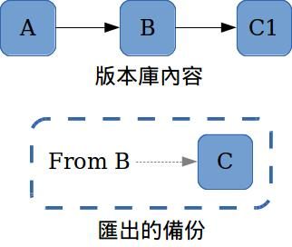
▲ 圖 2：傳統上 Mercurial 修改版本的作法 - - 將舊版踢出版本庫。
在 Mercurial 中，所謂「改寫」的意思是：「C 版本被拋出版本庫作為備份被另外保存，然後用一個 C1 版本取代 C 原有的位置」， 也就是整個歷史進程變成 A -> B -> C1 這樣的架構。您要翻看原有的 C 版本時，無法在您的版本庫中找到，要到匯出的備份中尋找。
不過一旦啟用 Evolve，另一套邏輯就會被套用：
原有的 C 版本會被標記為過時並隱藏起來，但不會被版本庫丟掉。然後，Mercurial 會將「舊的 C 版本」指向「新的 C1」，以此表示「C1 是 C 版本的後繼者」。注意這條繼承路線並不屬於「檔案的歷史」，而是「變更集的歷史」。
換句話說，線圖會變成這樣……
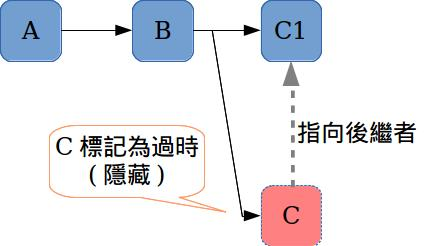
▲ 圖 3：這是一個 amend 的範例。其中「指向後繼者」的灰色線即為版本的版本。注意灰色線與實心線意思不同，在 log 中看不到。
來看看其他變種：
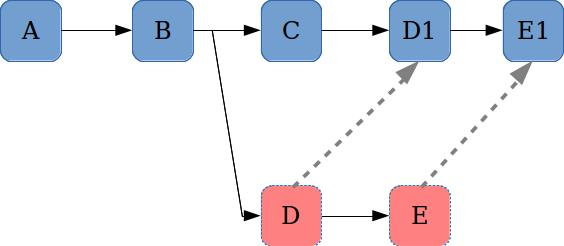
▲ 圖 4：rebase 的情況
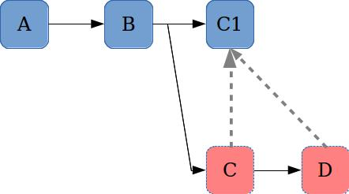
▲ 圖 5：fold 的情況
▲ 圖 6：用 prune 指令踢掉提交 C。這種狀況 C 不用指定後繼者。
在上面的範例中，預設只有藍色的變更集會顯示在 log 圖中，因此能保持線圖清晰。紅色的變更集雖然被標示為過時隱藏，但只要必要，依然可以叫回或列出，讓用戶加以追蹤使用。
而且，正如圖所示，用戶可以追蹤 C -> C1 這樣的版本關聯性，正向或反向查找都可以。
事實上，上圖虛線箭頭所描述的關係，還可以用來完成許多更複雜的事情。請見以下範例。
解決更複雜的難題
看下面的線圖：
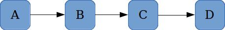
▲ 圖 7：原始的狀況
假設現在我們發現，C 變更集中有什麼東西寫錯了，想將 C 變更集修改 (amend) 為 C1 變更集。於是線圖會變成以下這樣……
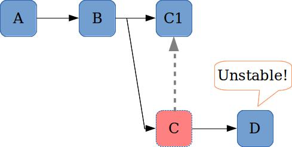
▲ 圖 8：修改 C 變更集
您可以看到，D 變更集的狀態怪怪的……
邏輯是這樣的：C 變更集已經被廢棄，那麼基於 C 變更集開發的 D 變更集，他必然會包含某些被廢棄的東西。這種狀況下 D 變更集被稱為不穩定 (unstable) 的變更集。
現在，因為虛線箭頭的存在。這個步驟 evolve 可以自動解析 D 應該要 rebase 到哪裡。以本圖來說，rebase 的目標毫無疑問 C1。
用戶只要下指令「hg evolve」……
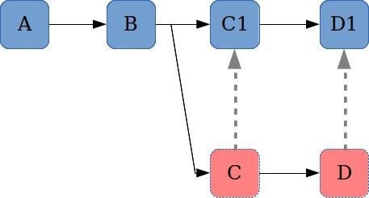
▲ 圖 9：用 hg evolve 解決問題
所有 rebase（精確說來其實是 graft，不過這裡就不詳細區分了）會被自動處理好 - - 頂多再解一下衝突 - - 問題就被解決了。
在過去，Mercurial 沒有紀錄 C 與 C1 的關係，因此這種 rebase 無法自動進行，而必須要靠人力去肉眼追蹤。而 evolve 幫我們解決了這類麻煩的問題。
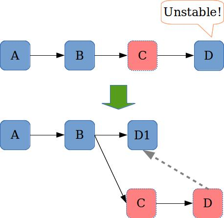
▲ 圖 10：另一個範例，單單踢掉 C 變更集(C 沒有後繼者)時的狀況。
話說類似 unstable 這類，需要用 hg evolve 指令單獨處理的狀況，其實還有其他幾種，不過這方面就先不細講，各位碰到再去查文件就好。
修改共用倉庫不再是痛苦的操作
為求方便，以上假設整個流程發生在同個倉庫中，不過對於多人合作，上述流程其實更加有用。
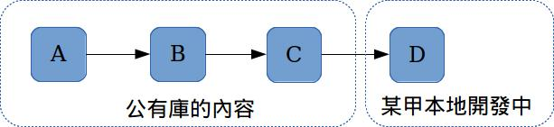
▲ 圖 11：初始的狀態
請看上圖。假設：「某甲在本地開發出了 D 變更集，不過隨後，甲拉取遠端共用倉庫，卻意外發現該死的某乙將 C 變更集，報廢後修改為 C1 變更集……」
結果某甲本地倉庫的線圖變成以下狀況。
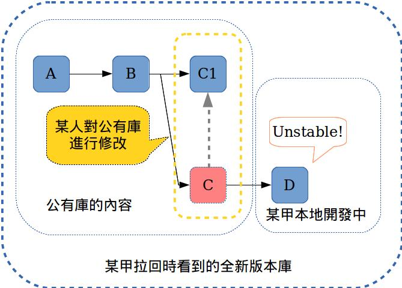
▲ 圖 12：公有庫的 C 被某人改為 C1，然後某甲將遠端庫拉回時，版本庫會變成這樣。
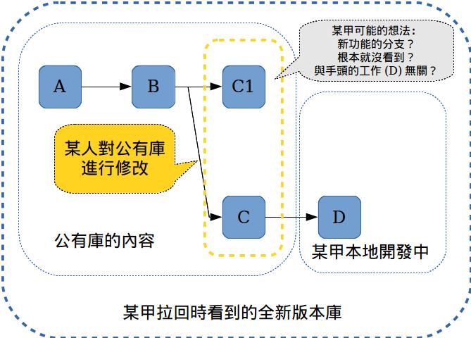
▲ 圖 13：作為比較：沒有 evolve 時，幾乎無法處理追蹤。所以一般都建議不要修改公有庫。
在沒有 evolve 支援的狀況下，中間的虛線箭頭不會存在，表示「報廢」的紅色標記也不存
在。某甲根本不知道那個多出來的 C1 是怎麼回事，只會以為是別人正在開發別的功能。某甲如果沒被提示，很可能依然沿著 C 這條錯誤的路徑繼續開發下去，直到某天將開發的功能合併回主線中 - - 不知不覺又把有問題的 C 給合併回去。整個過程中，可能沒人意識到不對勁。
為了避免這種慘劇發生，只要有人修改公有倉庫，就必須要向所有開發者廣播，告訴他們應該拋棄曾經引入 C 變更集的開發路徑。讓大家各自將正在開發的東西 rebase 到替代的變更集上（因應每個分支起點不同，替代的變更集可能不一樣，因此必須要逐人&逐項清查），然後繼續開發。
這些複雜的操作，只要有一個開發者沒做或做錯，那麼應該被廢棄的舊版本，依然會被引入。
總之麻煩又複雜，要是有一步搞錯那就白幹了。因此「共用倉庫不該被修改」，「推上共用倉庫的東西永遠不該被改變」幾乎已經成了鐵則。
不過有了 evolve 紀錄的資訊後，如果用戶在不穩定的變更集上開發，Mercurial 會做出提示與警告。而解決這種「不穩定」的方法也很簡單：只要下指令「hg evolve」，不用任何參數，不用和其他開發者廣播，不用看 log，所有問題都會被自動解決。
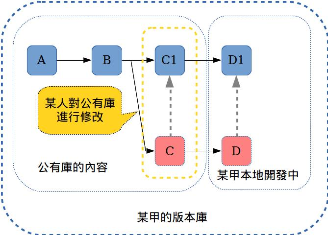
▲ 圖 14：某甲下指令 hg evolve 自動解決問題
修改共用倉庫在此變成了一個有實際意義的選項。而不再是「接近於不可能」。
實際使用
理論部份到此告一段落，下面來看看 evolve 的實際操作。
被 evolve 標記為廢棄的版本，預設是不能操作、觀察、顯示的。就算您打了諸如以下的指
令……
- hg log -r “obsolete()”
- hg up 某個隱藏版本
- hg revert -r 某個隱藏的版本
hg 也不會對那些版本做動作，log 列表不但空空如也，它甚至會告訴您：「您指定的版本不存在」這問題一開始很困擾我，不過關鍵其實在於「 --hidden 」全域參數。如下：
hg log -G --hidden
這個參數可用在 Mercurial 所有指令中。只要您想對隱藏版本做任何事情，就都要加上這個參數，否則廢棄的版本在您的版本庫中是完全隱形的。
追蹤關聯性
當前的 evolve ，追蹤「版本的版本」不像 hg log -G 那樣有清晰的線圖可以看。
不過您還是可以運用 revset 取得情報。比方說像下面這幾條 revset：
- precursors (set)
set 版本的直接先代版本 - allprecursors (set)
set 版本的所有先代版本 - successors (set)
set 版本的直接後繼版本 - allsuccessors (set)
set 版本的所有後繼版本
如此就可以追蹤出變更集之間的版本的關聯性。
順便一提，在 hg log -G 線圖中，廢棄的變更集會用 x 來表示，而正常的變更集則會用 o 來表示。如下所示：
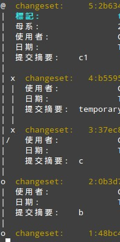
▲ 圖 15：注意其中被打 x 的部份，那就是被廢棄的版本。
在這邊順便提醒各位一個實作細節……請注意【圖 14】中的 4 號變更集。
在版本號較舊的 Mercurial 上，evolve 會在 amend 3 號變更集時，於尾端產生一個多餘又礙眼的廢棄變更集 4 號（如上圖那樣）。這是舊版 Mercurial 的實作細節造成的，在新版中就會消失掉。不用慌張。
復活報廢版本
想要復活已經被報廢的隱藏版本？請用「hg touch」指令。這個指令名有些難理解，evolve 的開發者也有在考慮要更換名字。
總之，透過這個指令，已經被廢棄的變更集可以被「復活」。不過，此處「復活」的意思並不是「修改廢棄的變更集，讓廢棄標記移除掉」，而是將廢棄的變更集「複製一份，產生一個未被廢棄的副本」。
復活的過程中，可能會碰上分支問題 - - 也就是「一個廢棄的變更集同時有兩個後繼者」。這問題同樣可以用 hg evolve 解決。詳情請參看官方文件吧。
廢棄標記的推送、拉收與 clone
當遠方／本地兩個版本庫都有啟用 evolve extension 時，互動行為會像是下面這樣子的……
- clone: 倉庫會被完整的 clone 走，包括廢棄的變更集在內。
- pull: 廢棄的變更集也會被 pull 下來。如果本地端與遠端擁有相同的變更集 A，而遠端的 A 已被廢棄，但本地端未被廢棄，則遠端 A 的「廢棄標記」會被拉回並套用到本地端的 A 之上。
- push: 遠端不存在 A 變更集，且 A 在本地端被廢棄，則 A 變更集「不會」被推到遠端。不過如果 A 同時存在於選端與本地端，且本地端的 A 被廢棄了，則廢棄標記會被傳輸出去。
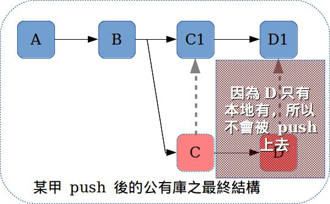
▲ 圖 16：接續【圖 14】，D 不會被 push 到公有庫中。因為在圖 14 對應的範例中，D 變更集只出現在本地倉庫。
evolve 的推送原則，使 push 指令不至於推送一些本地專屬的失敗提交上去，這可確保遠端倉庫不會堆滿亂七八糟的垃圾。不過另一方面，這表示 push 指令無法在遠端備份本地端的失敗品。要備份報廢的失敗品得另想辦法。
在沒有 evolve 的環境下操作廢棄標記
雖說依照 Mercurial 社群的態度，這玩意兒肯定會進入核心中（Mercurial 3.0.0 核心已經直接支援 evolve 使用的廢棄標記），但 evolve 畢竟是一個非常新的發展中外掛，您遇到的伺服器除非是您自己架的，否則很可能並沒有啟用它。比方說 BitBucket 就是如此。
但是我們總要與這些伺服器互動，對嗎？
在此簡單解說一下，這些沒有啟用外掛的 Mercurial，在各種情況下對廢棄標記的處理方式，以資參考。以下均為我個人的實驗，可能有不準確之處，還請指教。
首先，如果您用沒裝 evolve 的機器，處理一個內含廢棄標記的版本庫，則 Mercurial 3.0.0 以後的版本，會提示您「這個版本庫中有廢棄標記，而您並沒有啟用 evolve 外掛」 - - 不過除非您要對廢棄標記做什麼特別的事情，不管這警告也不會怎樣。就只是有提示而已。
如果您本地的機器有裝 evolve，而遠端機器沒有。當您與這台機器互動時……
- push 時，任何廢棄標記都無法保存到遠端。
舉例來說：如果遠端與本地端都存在 A 變更集，而您在本地端將 A 改寫成 A1，推上遠端。遠端會同時出現 A 與 A1 兩個變更集，但是遠端的 A 並不會被標記為廢棄，也不會紀錄與 A1 的關係，就只是像單純地分支了一樣。 - push 時，如果 A 變更集只有本地有，且被標為廢棄，則 A 不會被推到遠端。
至於 pull 與 clone ，因為遠端不會紀錄廢棄標記，所以其展現的行為，就和平時一模一樣。
好啦，這次的玩具研究匯報終了，分享給大家。一起來玩吧。厚呦~
附：簡要安裝步驟
想要在 Mercurial 中安裝 evolve？請參考這裡 (https://bitbucket.org/marmoute/mutable-history)。簡單地說，步驟如下：
一、將程式碼 clone 到本地端：
hg clone https：//bitbucket.org/marmoute/mutable-history
二、在 hgrc 中的 extensions 區段寫入啟動訊息：
[extensions]
evolve = PATH/TO/mutablehistory/hgext/evolve.py
如此就安裝完成了。如果因為 Mercurial 版本太舊跳警告，就自行用 hg up 3.3.2 之類的方式將 evolve 手動降級一下。evolve 的開發經常踩在刀鋒之上，Mercurial 的版本是愈新愈好的。